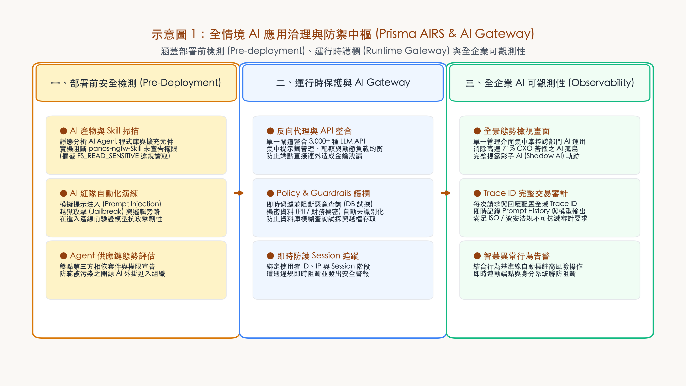
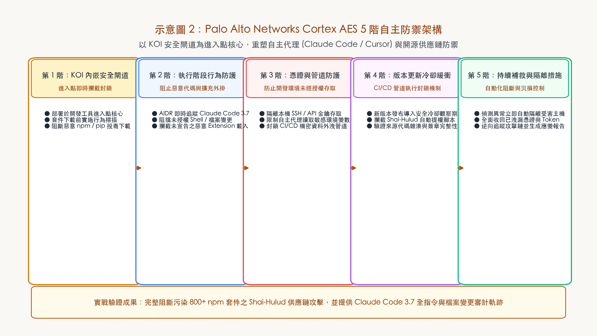
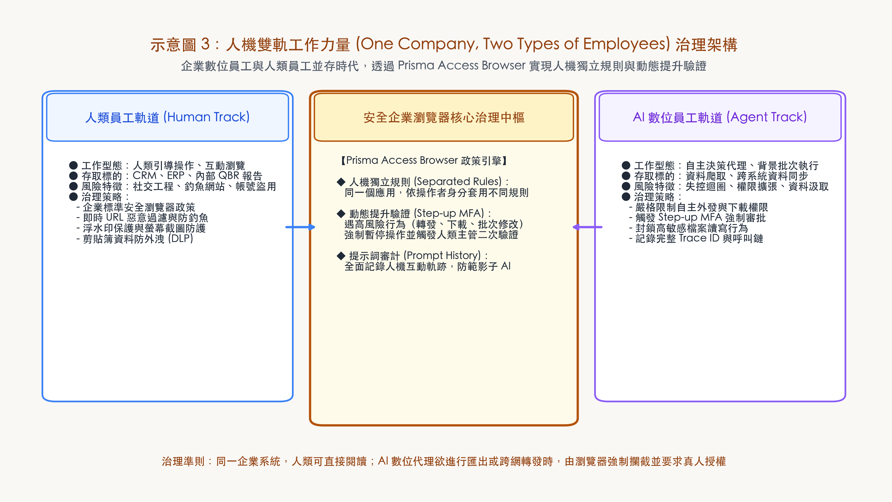
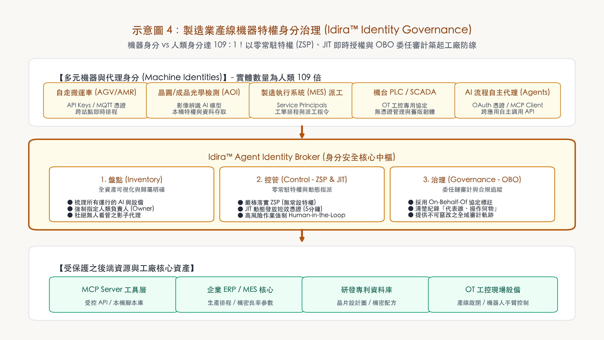
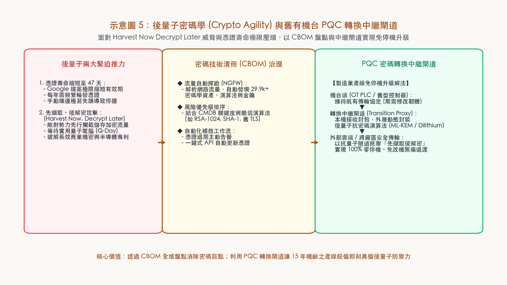
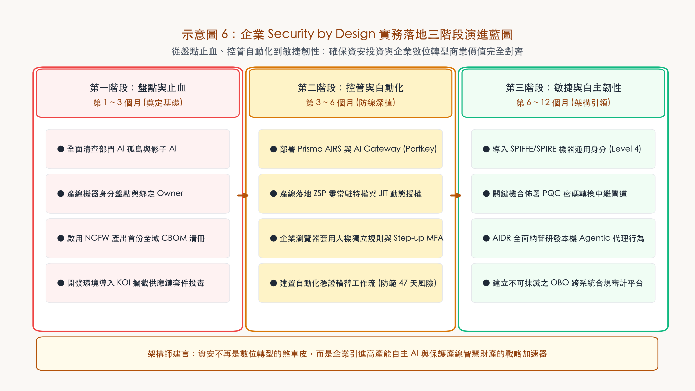

📐 架構示意圖檢視
從全情境 AI 治理、自主端點防禦、產線機器特權身分到後量子密碼學的實務落地綱領。解構企業邁入「人機雙軌」與「代理自主化」時代的系統性防線建置路徑。
即時物理流體力學動態模擬：企業全通路 Prompt / API / 機台特權指令湧入，經 Prisma AIRS 語意渦流過濾、Cortex AES 5階動態沙箱、Prisma Browser 人機分流閥、Idira™ 機器身分池與 PQC 抗量子中繼閘道之動態防禦全景。
生成式 AI 正以超乎預期的速度，從單純的聊天機器人（Chatbot）躍遷為具備自主權限的決策代理（Agentic AI）。企業傳統資安邊界在面臨多部門分散導入與影子 AI 擴散時，正遭受前所未有的結構性挑戰。
在當前企業組織中，AI 應用並非由單一部門集中採購，而是由行銷、業務、工程、研發等不同團隊依各自需求自行導入。現場調研數據顯示，高達 71% 的 CXO 坦言內部團隊運用 AI 缺乏統一策略，形成嚴重的技術孤島。企業面臨三大失控痛點：
1. 影子 AI (Shadow AI) 蔓延：企業內部充斥未經審核的第三方模型與外掛外，商業機密與個人隱私數據（PII）在員工日常對話中無管制外洩。
2. 代理失控 (Agentic Sprawl)：研發團隊引進自主代理（如 Claude Code、Cursor），代理程式自動在開發者電腦上下載相依套件、讀取本機機密環境變數，甚至將機密代碼外傳至未授權伺服器。
3. 成本與治理失控 (FinOps & Compliance Risk)：缺乏統一的 API 閘道進行流量配額調配、快取管理與防禦護欄，造成 Token 費用爆表與安全合規審計全面脫鉤。

| 治理生命週期 | 核心防護維度 | 傳統防護盲點 | Palo Alto 創新架構 | 達成之治理效益 |
|---|---|---|---|---|
| 部署前 (Pre-Deployment) |
AI 產物與外掛掃描 AI 紅隊模擬演練 |
傳統 SAST/DAST 無法解析 Prompt 語意與 Agent Skills | Prisma AIRS 套件語意深度靜態檢測、AI 紅隊滲透演練 | 在上線前阻斷惡意提示詞、越獄漏洞與未宣告存取權限 |
| 運行時 (Runtime) |
AI Gateway 反向代理 Policy & Guardrails 護欄 |
傳統 WAF 無法解析自然語言，難以防範越獄 (Jailbreak) | Portkey 整合閘道、即時語意過濾、資料庫試探阻斷、動態 PII 遮罩 | 確保敏感個資不外洩，阻斷 Prompt 注入與越獄攻擊 |
| 持續運作 (Observability) |
全景檢視畫面 (Dashboard) 全域 Trace ID 稽核軌跡 |
各部門各自綁定 API 金鑰，缺乏統一合規日誌與使用量分析 | 單一儀表板、全景合規態勢追蹤、即時異常阻斷與自動警報 | 具備法律級鑑識軌跡，精準監控 Token 消耗並消除影子 AI |
針對 AI 孤島與代理失控問題，Palo Alto Networks 提出了以 Prisma AIRS（AI Runtime Security）為核心的全方位治理架構。涵蓋部署前檢測、運行時動態護欄與全域可觀測性三大層級。
深度檢測 AI Agent 程式庫與延伸外掛（Skills）。在研討會現場實機示範中，安全引擎成功掃描到一個名為 panos-ngfw-Skill 的外掛套件，雖然表面上宣稱為防火牆設定查詢工具，但在其依賴的底層 Python 腳本中，卻暗藏了：
"Undeclared Capability: FS_READ_SENSITIVE — 試圖讀取主機高敏感檔案與設定檔"
Prisma AIRS 在套件進入部署環境前即刻觸發政策阻斷，防止其被引入生產環境。此外，系統提供：
1. AI 紅隊測試 (AI Red Teaming)：透過自動化安全引擎對 LLM 與 Agent 發動高強度語意攻擊，模擬提示注入（Prompt Injection）、越獄（Jailbreak）與邏輯旁路。協助企業在模型對外發布前全面掌握潛在弱點。
2. 供應鏈態勢評估 (Supply Chain Posture)：評估 Agent 供應鏈風險，全面盤點第三方相依模組、外掛程式庫的來源信譽與數位簽章，防範類似開源軟體投毒的「AI 供應鏈污染」。
在運行時階段，Prisma AIRS 透過整合 Portkey 的高效能 AI Gateway 作為流量反向代理。該閘道支援超過 3,000 種 LLM API，具備四大關鍵能力：
1. Trace 交易追蹤：為每次請求與回應配置全域 Trace ID，記錄完整提示詞、回應內容、呼叫時間與延遲，滿足企業稽核與取證需求。
2. 資料庫試探防護 (Database Probing Guard)：動態防護針對 LLM 的模糊資料庫試探攻擊（如試圖利用 Prompt 拼湊 SQL/NoSQL 查詢以汲取後端機密資料庫），即時阻斷並產生日誌警報。
3. 機密資料遮罩 (PII Masking & DLP)：在 Prompt 傳送至外部公共雲端模型（如 OpenAI、Anthropic）前，自動遮罩或置換身分證字號、信用卡、原始碼金鑰及財務數據，確保資料外洩防護（DLP）不留死角。
4. 配額與負載平衡：針對不同部門與團隊設定使用額度、存取頻率限制，並在多個模型供應商間進行動態負載平衡，達到資安與維運成本的最佳平衡。
| 功能構面 | Prisma AIRS AI Gateway | 傳統 API 閘道 (Kong/Apigee) | 開源自建 Proxy | 資安合規優勢 |
|---|---|---|---|---|
| 語意防護 (Semantic Guard) |
原生內建 Prompt Injection 與越獄行為即時過濾 | 僅支援一般正則/字串比對，無法識別自然語言攻擊語意 | 需自行串接外部審查模型，延遲極高且維護繁重 | 毫秒級自然語言語意解析，阻斷越獄攻擊 |
| 機密防護 (PII & DLP) |
自動識別敏感資料與遮罩，支援金融/醫療/研發機密規則 | 需依賴外部 DLP 模組串接，無法精準理解對話脈絡 | 需自寫 Regex 處理，誤判率與漏報率極高 | 符合 ISO 27001、GDPR 與個資法最高防護等級 |
| 供應鏈檢測 (Skill Scan) |
深度掃描 Agent 外掛權限，自動偵測未宣告檔案讀寫 | 完全無此能力，僅能做基礎封包轉發 | 無此能力，仰賴人工審核代碼 | 防止受污染之第三方程式庫滲透至內部系統 |
| 日誌稽核 (Traceability) |
端到端全域 Trace ID 審計，完整 Session 互動時間軸 | 僅記錄 HTTP 狀態碼與標頭，無法記錄 LLM 完整對話 | 僅記錄標準伺服器日誌，日誌易被篡改或遺漏 | 滿足金融高監管稽核要求與法律級取證需求 |
當前研發團隊已普遍使用 Claude Code 3.7、Cursor、Windsurf 等本機自主式代理。這類工具能夠自主在開發者電腦上建立檔案、執行 Shell 指令、讀取目錄並調用本機網路，使研發工作站由「文字編輯器」躍升為具備高特權的「微型伺服器」。
傳統 EDR（端點偵測與回應）將自主代理的所有動作視為「開發者本人的合法授權操作」，因而產生巨大的防禦真空。針對自主代理行為與開源軟體供應鏈投毒，Palo Alto Networks 發表了以 KOI 為第一階進入點核心的 Cortex AES（Agentic Endpoint Security）五階治理防禦架構：

第 1 階 KOI 內嵌安全閘道 (Kernel-level / Inline Ingress Gate)：部署於開發環境第一線進入點。在開發者或 Agent 下載外部套件（npm, pip, cargo）時，於下載封包觸及本機裝置前實施行為特徵與相依性圖譜分析，阻斷帶有惡意攻擊載體的相依模組。
第 2 階 執行階段防護 (Runtime Agentic Defense - AIDR)：AIDR 核心引擎全時監控自主代理（如 Claude Code 3.7）。精確追蹤其執行的每一條 Shell 命令、檔案寫入與外部 API 調用，即時阻止惡意代碼注入與未授權開發工具外掛擴充。
第 3 階 憑證與管道防護 (Credential & Pipeline Shield)：嚴格隔離本機 SSH Keys、雲端存取金鑰（AWS/GCP/Azure Credentials）與 CI/CD 機密環境變數，防止自主代理遭惡意 Prompt 誘導而擅自存取或外洩核心金鑰。
第 4 階 版本更新冷卻緩衝 (Release Quenching Buffer)：針對開源套件的新版本發布建立安全冷卻與觀察期。若新版本套件短時間內出現非預期之建置後腳本（post-install hook），CI/CD 管道將自動執行封鎖，防範零日投毒攻擊。
第 5 階 持續補救措施 (Continuous Remediation)：一旦端點發生異常，系統自動隔離遭入侵裝置，全面撤銷外洩憑證，並由 XSIAM/XDR 引擎自動逆向回溯完整攻擊鏈，產出自動化修補報告。
| 防禦構面 | 傳統 EDR / XDR | Cortex AES (具備 AIDR & KOI) | 實務防禦差距與效益 |
|---|---|---|---|
| 本機自主代理 (Claude Code / Cursor) |
視為開發者之合法行為，僅在落地惡意二進位檔時告警 | 細粒度解析 Agent 指令、檔案異動與 Token 互動脈絡 | 及早識別代理遭誘導越獄或執行越權操作之風險 |
| 開發進入點攔截 (KOI Gateway) |
套件下載至本機硬碟後才由靜態特徵碼進行掃描 | 在套件觸及本機磁碟前，於網路與連線層即時阻斷 | 杜絕零日投毒套件落地執行，將攻擊阻絕於邊界之外 |
| 開源套件建置腳本 (Post-install Hook) |
預設允許執行，容易被惡意提權腳本繞過 | 深度分析 Shell 行為，封鎖異常反向連線與權限提升 | 完美防堵 Shai-Hulud 等暗藏背景衍生進程之攻擊手法 |
| 開發憑證防護 (Credential Shield) |
依賴作業系統層級權限，難防代理在合法權限下外洩 | 微隔離憑證目錄 (~/.ssh, .env)，非真人宣告存取一律攔截 | 防止雲端 API 金鑰與伺服器登入私鑰遭竊取 |
近期引發全球資安界高度震動的惡意套件 Shai-Hulud，成功污染了超過 800 個 NPM 套件及 725 個 GitHub 倉庫。開發者只要在本地端執行一次看似正常的 npm install，惡意腳本即在背景靜默竊取開發憑證並自動提交惡意代碼擴散。以下為 Cortex AES 5 階防禦的精確反制矩陣：
| 攻擊階段 | Shai-Hulud 惡意行為 | 傳統防護應對表現 | Cortex AES 5 階防禦應對動作 |
|---|---|---|---|
| 進入點滲透 | 開發者執行 npm install 下載受污染之相依套件 | 放行通過；靜態特徵庫尚未收錄雜湊碼 | 【第 1 階 KOI 安全閘道】 下載未觸及硬碟前即識別惡意行為，直接於網路傳輸層攔截封鎖 |
| 腳本觸發 | 執行 postinstall 腳本，於背景靜默派生惡意行程 | 視為 node.js 正常子行程，不予攔截 | 【第 2 階 執行階段防護】 AIDR 偵測到未經授權之行程建立與動態呼叫，即時中斷腳本執行 |
| 憑證搜刮 | 搜刮本機 ~/.ssh/id_rsa、.env 金鑰與 AWS Tokens | 開發者環境中常態讀寫，無告警機制 | 【第 3 階 憑證管道防護】 封鎖非宣告存取；嚴密隔離環境變數目錄，阻斷竊取行為 |
| 橫向擴散 | 透過 CI/CD 管道自動提交惡意 PR 進行跨倉庫傳播 | 常態代碼提交，Git 系統直接接受 | 【第 4 階 版本冷卻緩衝】 CI/CD 管道檢測到異常版本更動，強制阻斷自動提交 PR 行為 |
| 主機遭控 | 建立反向 Shell 回連 C2 伺服器並抹除日誌痕跡 | 待連線建立後才可能被流量分析偵測，已造成損害 | 【第 5 階 持續補救措施】 端點即刻自動隔離，撤回連線 Token 並全自動回溯完整攻擊圖譜 |
研討會中提出了一個極具深度的企業組織轉型模型：企業正全面邁入「One Company, Two Types of Employees」時代——在同一個企業組織內部，同時存在由人類員工組成的傳統團隊，以及由 AI Agent 構成的數位員工團隊。
這兩種員工雖然使用相同的內部 Web 應用系統（如 ERP、CRM、工單系統），但其風險特徵截然不同。人類員工容易遭受社交工程與釣魚攻擊；而 AI 數位員工則容易陷入無限迴圈、受惡意 Prompt 操縱，或以每秒數百次的極速汲取公司大量核心機密。

1. 動態身分區隔政策：針對同一套 Web 應用，瀏覽器政策引擎能自動辨識存取發起者為真人或 AI 代理，並動態指派完全不同的安全規則。例如：人類可正常閱讀 QBR 財務報告，但 AI 代理若欲讀取該頁面，敏感營收數字將被自動遮罩，僅提供統計摘要。
2. Step-up MFA 中斷審批：當 AI 數位員工在瀏覽器內嘗試執行高風險操作（例如：批次匯出客戶名冊、修改核心系統參數、將敏感報表轉發至外部信箱），Prisma Access Browser 會強制暫停該連線階段，即時向主管或真人負責人發送行動裝置 Push MFA 授權請求，唯有真人確認放行後方可繼續執行。
3. 全量提示詞審計 (Full Prompt Auditing)：完整記錄全公司員工與所有內嵌 Agent 的互動對話內容與 Prompt 軌跡，集中辨識合規態勢，防範影子 AI 蔓延。
| 治理構面 | 人類員工 (Human Track) | AI 數位員工 (Agent Track) | Prisma Browser 政策控制手段 |
|---|---|---|---|
| 典型工作型態 | 主觀判斷、互動瀏覽、文書撰寫 | 自主決策、批次資料處理、跨系統同步 | 依據 Session 屬性自動標註流量型態 |
| 潛在安全威脅 | 社交工程、惡意釣魚、密碼外洩 | 失控迴圈、Prompt 操縱、超速汲取資料 | 區隔威脅模型，實施雙重安全評估 |
| 內部報表存取 | 允許完整閱讀；禁止未授權複製 | 僅允許存取經摘要過後之非敏感資料 | 動態內容遮罩與 DOM 級 DLP 防護 |
| 檔案下載/匯出 | 允許依職責下載，自動打上動態浮水印 | 預設全面封鎖；需真人審批授權 | 阻斷背景未授權下載；浮水印追蹤 |
| 高風險外發動作 | 一般二次確認或主管審核 | 強制觸發 Step-up MFA，要求真人即時放行 | 暫停 Agent 連線階段，杜絕自動化外洩 |
由 Idira 資深資安顧問黃旭鍵（Kerr Huang）帶來的專題演講，直擊台灣高科技製造業與精密供應鏈的核心痛點。他提出了震驚全場的警訊：「每個產線 AI 與設備都是特權帳號，身分治理是製造業最大的防禦死穴！」
調研顯示，現代高科技製造業內部的機器身分數量，已高達人類員工的 109 倍！工廠內的自走車（AGV/AMR）、AOI 晶圓光學檢測機、MES 派工服務、PLC 控制器乃至各類自動化腳本，都常態擁有長期有效且權限極高的靜態 API Keys、資料庫連線字串或 MQTT 通訊憑證。一旦其中一個機台遭入侵，攻擊者便可橫向穿透整個智慧工廠。

1. 盤點 (Inventory)：全面梳理全廠區正在運行的所有 AI 代理與自動化軟硬體，強制指定真人負責人（Owner），嚴格杜絕無人管轄的影子代理與幽靈帳號。
2. 零常駐特權 (Zero Standing Privilege, ZSP)：平時所有機器與代理均無常規權限；當需執行派工任務時，由 Agent Identity Broker 動態簽發具備精確範圍（Scope）與極短效期（TTL，通常為 15~30 分鐘）的短期權杖（JIT, Just-in-Time），任務結束後權杖自動作廢。
3. 委任代理 (On-Behalf-Of, OBO)：採用 On-Behalf-Of 協定，完整記錄 AI 代理在何時「代表哪一位使用者或系統」調用了何種工具與資料庫，提供不可篡改的法律級合規證據鏈。
| 機器身分類型 | 產線應用場景 | 傳統存在之致命風險 | Idira ZSP 落地控制措施 | 授權有效時限 |
|---|---|---|---|---|
| 自走搬運車 (AGV / AMR) |
晶圓盒 (FOUP) 跨站點自動化搬運與路徑排程 | MQTT 通訊金鑰寫死於本機；一旦遭竊全廠搬運陷入癱瘓 | 引入 mTLS 動態憑證交換，每次調度重新簽發短效憑證 | 單趟搬運任務 (30 分鐘內) |
| 光學檢測機台 (AOI 視覺 AI) |
高階晶圓/載板表面瑕疵檢測、即時影像判定與缺陷分類 | 本機具備完整資料庫寫入權限；若被污染恐掩飾產線瑕疵品 | 模型與資料庫存取徹底隔離；寫入需由 Proxy 驗證簽章與時間戳記 | 每批次晶圓檢測 (15 分鐘內) |
| MES 派工服務 (Job Dispatcher) |
自動化配工、工單進度更新、機台運轉參數即時下發 | Service Principal 權限無限大；無人審核異常工單派發指令 | 實施 OBO 委任鏈審查；異常排程自動降級觸發工站組長手機確認 | 單一工單時程 (即時輪替) |
| OT 機台 PLC (控制器) |
產線自動化生產機台、機器人手臂運轉控制 | 多數使用明文或無驗證協定；缺乏身分認證與審計機制 | 部署微隔離身分中繼閘道，將 OT 指令轉換為短效加密工作階段 | 連線階段有效 (最長 60 分鐘) |
| 成熟度等級 | 等級定義 | 核心身分架構特徵 | 主要使用協定 / 機制 | 企業安全與合規效益 |
|---|---|---|---|---|
| Level 1 | 無序狀態 (Unmanaged) |
API Keys、密碼直接硬編碼在設定檔或代碼倉庫中 | 靜態 API Keys、明文帳號密碼 | 極高外洩風險；無任何存取審計與追蹤能力 |
| Level 2 | 集中金鑰管理 (Vault-Centric) |
使用 HashiCorp Vault、AWS Secrets Manager 集中儲存金鑰 | 定期手動金鑰輪替、密碼保險庫 | 金鑰集中化，降低源碼洩漏，但仍屬長效靜態金鑰 |
| Level 3 | 動態短效授權 (JIT & ZSP) |
全面消除常設特權；任務觸發時動態簽發短效存取權杖 | OAuth 2.0 / OIDC、JIT 憑證配發 | 大幅縮小攻擊暴露窗口；達成零常設特權合規 |
| Level 4 | 工作負載身分 (SPIFFE/SPIRE) |
以加密密碼學驗證工作負載與容器，自動核發 X.509 SVID | SPIFFE / SPIRE、mTLS 雙向加密認證 | 消除所有靜態金鑰；微服務與跨雲端工作負載原生互信 |
| Level 5 | 自主自我調適 (Universal Identity) |
AI 驅動全域身分態勢感知；動態評估風險並自動調整權限 | OBO 委任鏈、全域身分網格 (Identity Mesh) | 達到零信任終極形態；人機身分統一納管，自適應降權防禦 |
研討會壓軸之重量級議題聚焦於後量子時代（Post-Quantum Cryptography, PQC）的密碼學危機。企業當前面臨兩大無法迴避的緊迫推力：
推力一：SSL/TLS 憑證有效期限縮短至 47 天：Google 等瀏覽器巨擘提議將 SSL/TLS 憑證有效期限大幅縮減至 47 天；國內外憑證機構（如 TWCA）亦曾發生序號亂數不符規範需緊急全面撤銷替換之事件。未來每年企業憑證更新頻率暴增數倍，傳統人工申請、替換與部署流程將徹底癱瘓。
推力二：「先擷取、後解密」(Harvest Now, Decrypt Later) 迫在眉睫：敵意勢力或犯罪組織正大規模截獲並儲存高科技企業的加密傳輸數據（包含晶圓製程參數、半導體專利及財務機密）。他們等待實用量子電腦（Q-Day）問世後，即可一舉破解 RSA-2048 或 ECC 加密，使企業未來 10 年的核心商業機密全數曝光！

要實現密碼敏捷性，第一步必須看清企業內部到底使用了哪些密碼演算法與憑證。Palo Alto 展示了利用 NGFW 與流量分析技術，自動探勘全企業高達 29.9k+ 密碼學資產：
1. 流量自動探勘：無需在機台上安裝 Agent，透過解析網路流量即可全面盤點內部運行的 TLS 版本、對稱與非對稱演算法、憑證有效期與金鑰長度。
2. 風險優先級排序：結合資產關鍵度與演算法脆弱性評分，自動標註使用老舊弱密碼（如 RSA-1024、SHA-1、3DES）的高危險資產。
3. 自動化補救工作流：串接憑證管理系統與 ACME 協定，提供一鍵輪替、到期預警與憑證生命週期全自動化管理，徹底化解 47 天縮短危機。
| 密碼學資產類別 | 現行主要演算法 | 後量子面臨之威脅 | NIST PQC 推薦標準 | 過渡風險權重 |
|---|---|---|---|---|
| 金鑰交換協定 (Key Exchange) |
ECDH / RSA-2048 (廣泛用於 TLS 連線) |
Shor 演算法可在多項式時間內完全破解，遭攔截流量被解密 | ML-KEM (Kyber) |
極高 (Critical) 需立即過渡 |
| 數位簽章 (Digital Signature) |
RSA-3072 / ECDSA (代碼簽署、身分憑證) |
量子電腦可偽造身分簽章，偽造合規韌體更新或公文 | ML-DSA (Dilithium) SLH-DSA (SPHINCS+) |
高 (High) 2-3年內過渡 |
| 對稱式加密 (Symmetric Cipher) |
AES-128 / AES-256 (資料庫儲存、磁碟加密) |
Grover 演算法可將有效金鑰長度減半 (AES-128 降為 64-bit 脆弱) | AES-256 (提供 128-bit 量子安全) |
中 (Medium) 全面改用 256-bit |
| 雜湊函數 (Hash Function) |
SHA-256 / SHA-3 (完整性校驗與指紋) |
碰撞攻擊難度略有降低，但目前抗量子餘裕仍足夠 | SHA-384 / SHA-512 | 低 (Low) 維持標準即可 |
在製造業環境中，許多 PLC、機台控制器或舊式 ERP 系統機齡長達 10 至 15 年，根本無法重新編譯或升級支援後量子演算法。Palo Alto 展示了極具實戰價值的落地架構：部署 PQC 密碼轉換中繼閘道（Crypto Transition Gateway）。
| 架構構面 | 傳統舊機台直接升級困境 | PQC 密碼轉換中繼閘道解法 | 帶給企業之實務價值 |
|---|---|---|---|
| 機台端相容性 | 機台韌體老舊，硬體算力不足，廠商已停止維護，無法支援 PQC | 機台端維持原有舊通訊協議，完全無需修改韌體或代碼 | 保護既有數億元之機台設備投資，杜絕因資安被迫報廢機台 |
| 產線停機風險 | 更換控制模組需全廠停線測試，停機一小時損失數百萬營收 | 中繼閘道以旁路或穿透模式佈署，實現 100% 零停機上線 | 達成營運零中斷 (Zero Outage)，確保高良率連續生產不間斷 |
| 跨網傳輸安全 | 內部 OT 流量若跨廠區傳輸，極易在公共線路上遭竊聽側錄 | 中繼閘道自動封裝 ML-KEM 抗量子加密隧道，對外全面後量子化 | 徹底抵禦「先擷取後解密」威脅，保障晶圓專利與製程參數安全 |
| 維運集中管理 | 數百台控制器分散各廠，憑證更新需人工逐台手動插線 | 所有 PQC 憑證與金鑰集中於閘道端透過 API 全自動輪替 | 大幅降低維運工時與人為失誤，輕鬆因應 47 天憑證週期 |
綜合本次台中技術研討會之精華，企業在推動 Security by Design 架構升級時，切忌採取一次性全面翻新的激進做法，而應依循「盤點止血 ➔ 控管自動化 ➔ 敏捷韌性」三階段漸進路徑穩健推進。

| 落地階段 | 期程規劃 | 關鍵任務工作項目 | 負責單位與利害關係人 | 驗收檢核 KPI 指標 |
|---|---|---|---|---|
| 第一階段 盤點與止血 |
第 1 ~ 3 個月 | 1. 啟用 NGFW 探勘全域 AI 流量，產出影子 AI 清冊 2. 盤點產線所有機器帳號，強制綁定真人負責人 3. 導入 KOI 閘道，攔截研發端點受污染套件 |
CISO 辦公室、ITS 基礎架構、研發主管 | 影子 AI 盤點率達 100% 零未授權套件落地 |
| 第二階段 控管與自動化 |
第 3 ~ 6 個月 | 1. 部署 Prisma AIRS AI Gateway，集中管控 LLM 流量 2. 落地 ZSP 零常駐特權，為機台與 Agent 配置短效 JIT 3. 推廣 Prisma Access Browser，隔絕人機存取風險 |
IS 系統架構、資安團隊、各廠區主管 | AI 流量合規覆蓋率 90%+ 常駐機器特權完全清零 |
| 第三階段 敏捷與韌性 |
第 6 ~ 12 個月 | 1. 關鍵機台佈署 PQC 密碼轉換中繼閘道，抵禦竊密 2. 邁向 Level 4 (SPIFFE/SPIRE) 機器通用身分架構 3. 建立 CBOM 密碼清冊，落實 ACME 憑證全自動輪替 |
企業架構委員會、OT 工程處、C-Level 高管 | OT 機台 PQC 防禦 100% 憑證過期零風險 |